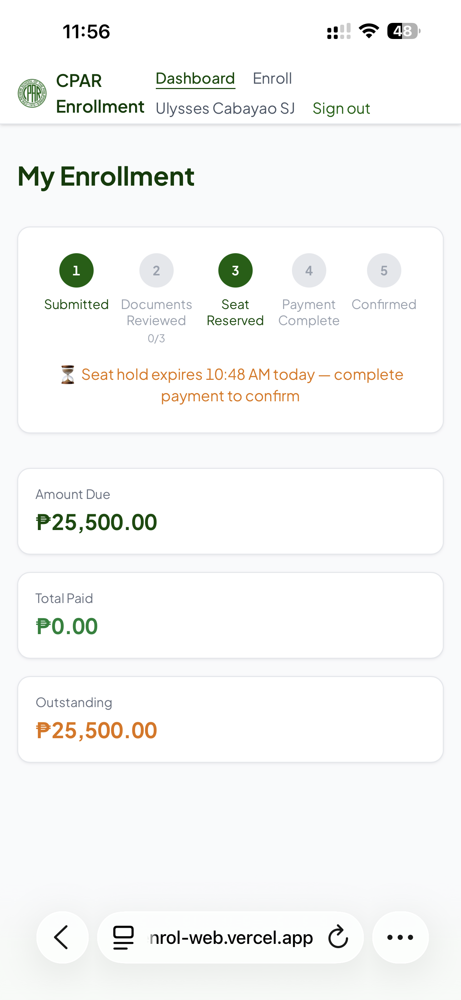
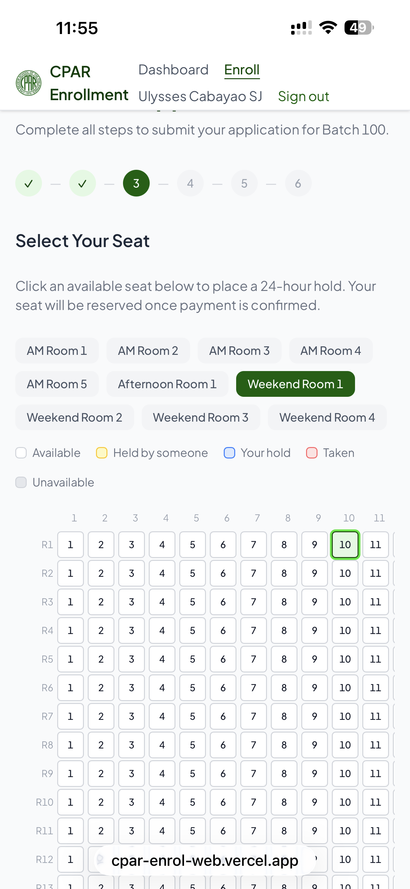
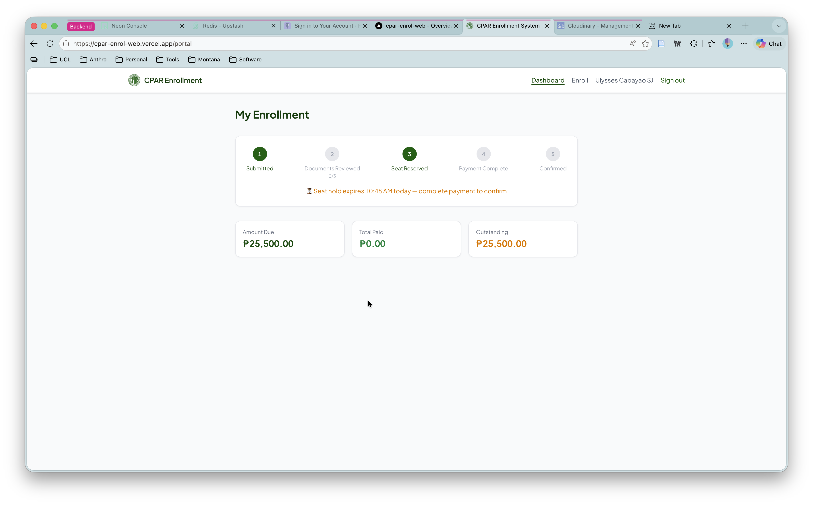

Self-service enrollment wizard
A guided multi-step form — personal info, program details, document upload, seat selection, and payment setup. Students complete their application in one session. No more chasing incomplete form submissions.
Board Exam Enrollment Platform
No more Google Forms backed by Google Sheets and a staff member manually reconciling payments. NLIST gives your students a self-service portal — from application and seat selection to payment and status tracking — and gives your staff a dashboard that closes the loop on every enrollee.
Built for board exam review schools · Two intake cycles per year · Instantly informs students of their enrollment status

Student dashboard — progress, payments, and seat hold status

Live seat selection — pick your seat, hold it for 24 hours

Desktop — admin dashboard with full enrollment management
NLIST was built to solve a real problem: a review school running on Google Forms submissions, manual sheet reconciliation, and a phone that wouldn't stop ringing during enrolment week. Here's what replaces it.
A guided multi-step form — personal info, program details, document upload, seat selection, and payment setup. Students complete their application in one session. No more chasing incomplete form submissions.
Students see the room layout and pick their preferred seat in real time. A held seat is locked for 24 hours while they complete payment — released automatically if it expires. No more manually slotting names into a spreadsheet.
GCash, card, or GrabPay via PayMongo — payments arrive pre-verified. Accept bank deposits too, with an admin approval step. Each student gets a live balance: what they owe, what they've paid, and any adjustments. No more spreadsheets double-checked against bank screenshots.
Students upload scanned requirements (transcript, diploma, photo, etc.) directly into the portal. Staff review and approve them from the admin dashboard. No more email attachments scattered across inboxes.
A single dashboard for payment approvals, document checks, refund requests, retaker flags, and batch roster exports. Every enrollee's status — applied, approved, paid, enrolled — visible at a glance. Export to Google Sheets or PDF when you need a paper trail.
Seat selection changes, payment confirmations, and application status updates push to students instantly via WebSocket. No more "check back later to see if it went through" — the student knows the moment their seat is confirmed.
What used to take a staff of five working through the weekend now runs itself — with your team reviewing, not chasing.
Fills out the enrollment wizard — personal information, program choice, document uploads — in about 10 minutes. Gets an application number immediately.
Sees the room layout, picks a seat. It's held for 24 hours. The seat map updates in real time so no two students book the same place.
Pays via GCash, card, or bank transfer. GCash and card are verified automatically. Bank deposits appear in the admin queue for review. The student gets a confirmation the moment payment clears.
Admin reviews uploaded documents, approves bank deposits, flags retakers, and exports the batch roster. The student's status updates instantly — no phone call, no "come back tomorrow."
Every board exam review school faces the same crunch twice a year. NLIST is purpose-built for that rhythm.
CPAR uses NLIST now — handling hundreds of enrollees across multiple batches, rate cards, retaker policies, and GCash-heavy payments. The same setup works for any CPA review center.
Live seat selection matters when every seat in the hall is premium. NLIST's seat engine handles it — room layouts, held seats, expiry sweeps — so your staff can focus on the curriculum.
Any board exam with two intake cycles a year, a rate card, document requirements, and a staff that dreads enrollment week. NLIST replaces the spreadsheet-and-email workflow with one portal.
NLIST is built and maintained by Ulysses S. Cabayao, whose path into anthropology began with a Master of Anthropology (Advanced) from the Australian National University. He is now a PhD candidate at University College London, where his research examines sovereignty, frontiers, and settler-colonialism in the United States. He also builds research and education software under the ainsight umbrella — including FieldScribe for fieldwork, EthnoFlow for digital ethnography, Sacrosanctum for parish life, Vantage for university leadership, and HouseOps for property maintenance, VOCATI for parish priest cover, and SiteSnap for no-code websites — NLIST grew out of the same conviction applied to education: that frustrated staff and students alike deserve better than Google Forms backed by Google Sheets and a prayer.
NLIST is deployed directly for each school — your batches, your rate cards, your room layout, your payment methods. Not a self-serve signup. Reach out and we'll configure it together.
Tell us about your review school — approximate batch size, current enrollment workflow, and what frustrates your staff most during intake — and I'll take it from there.
Email about NLISTI typically reply within a few days.
Also from ainsight: see the full family of apps →